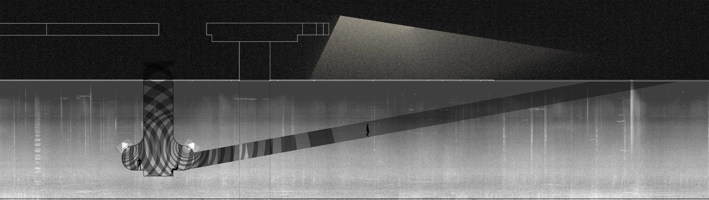
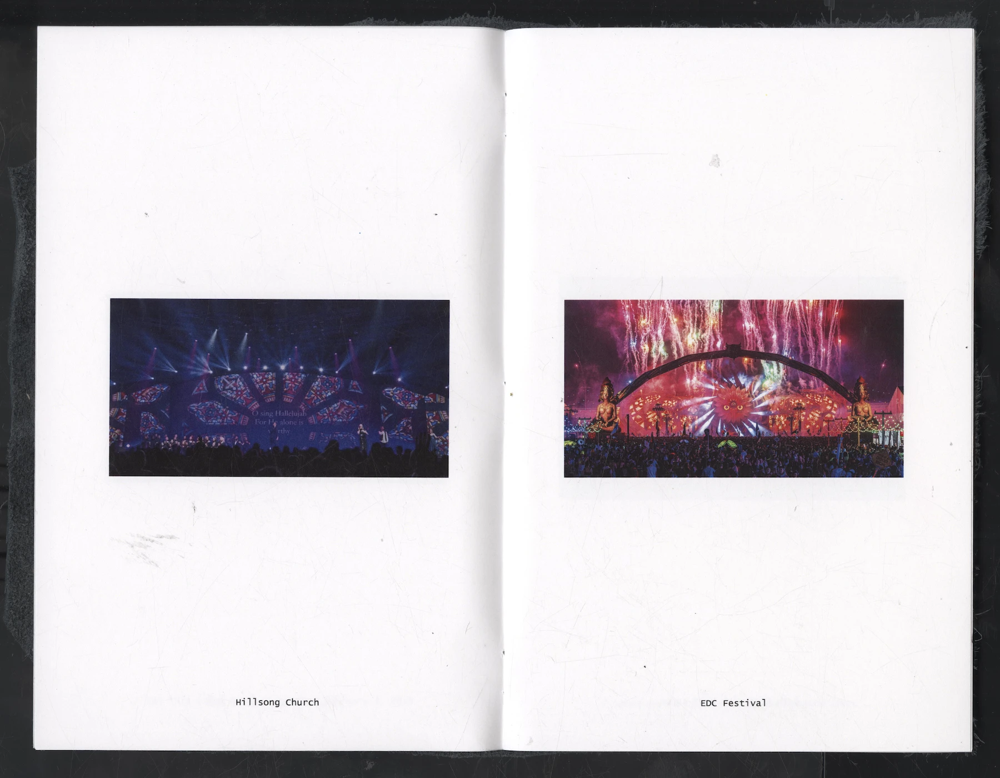
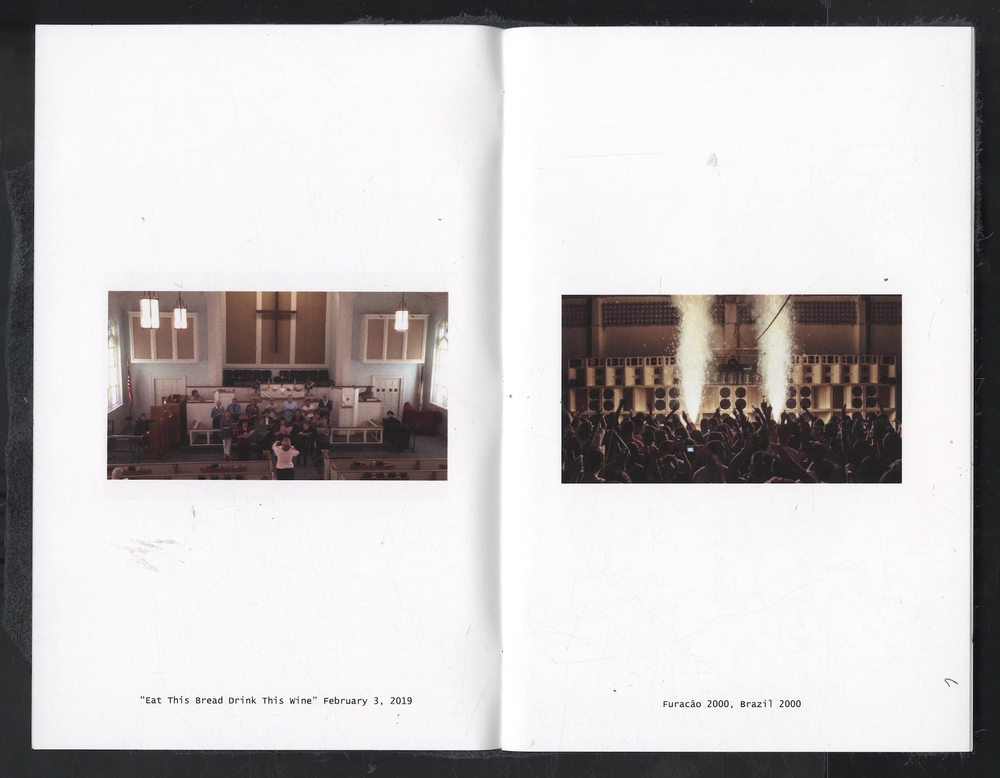
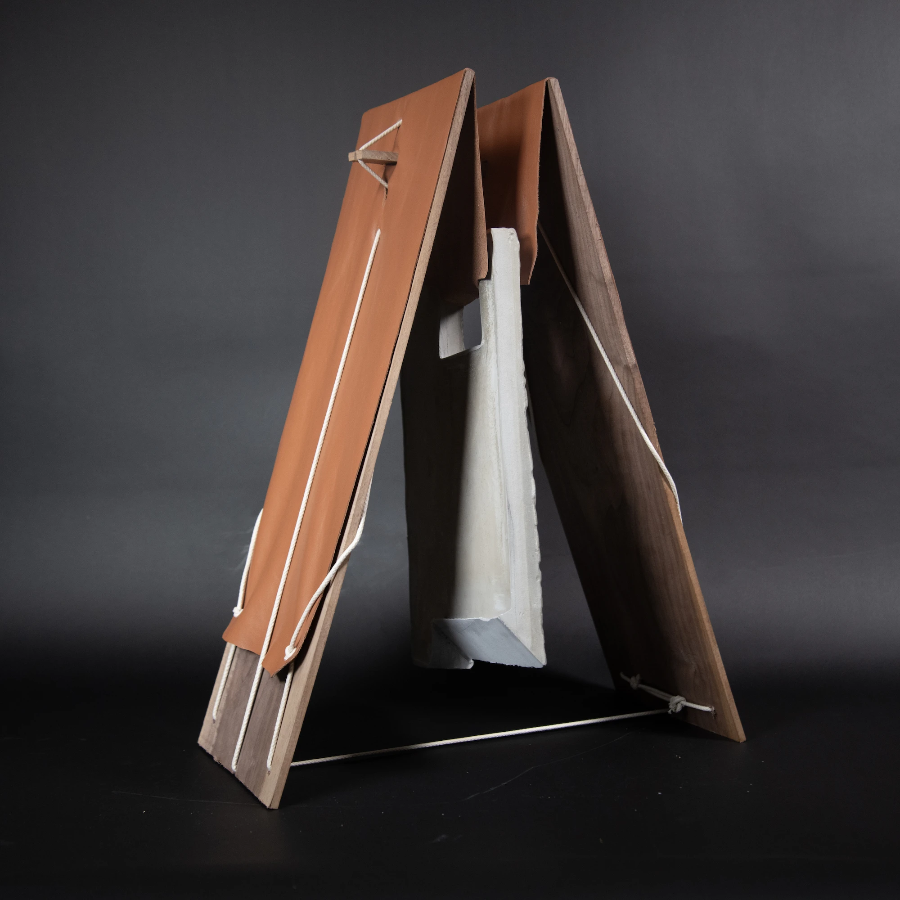
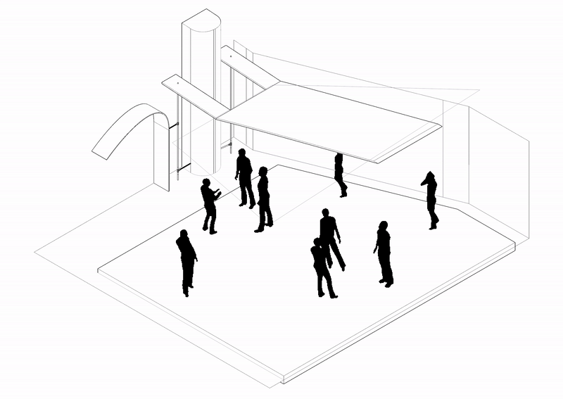
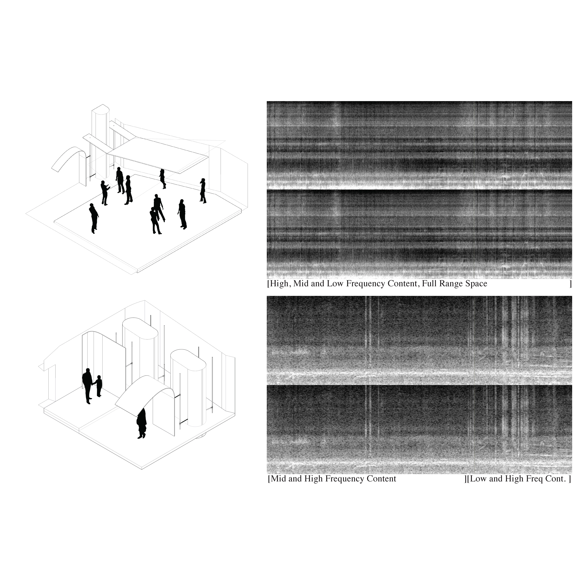
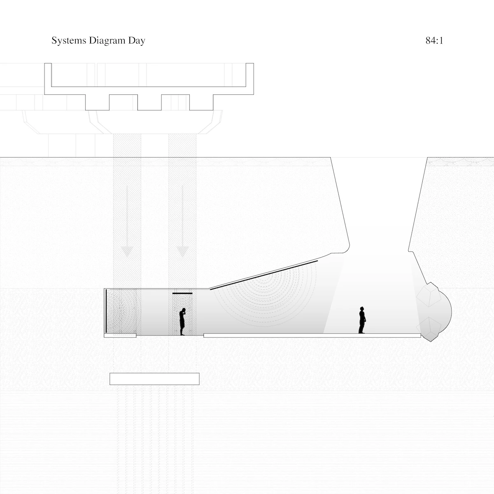
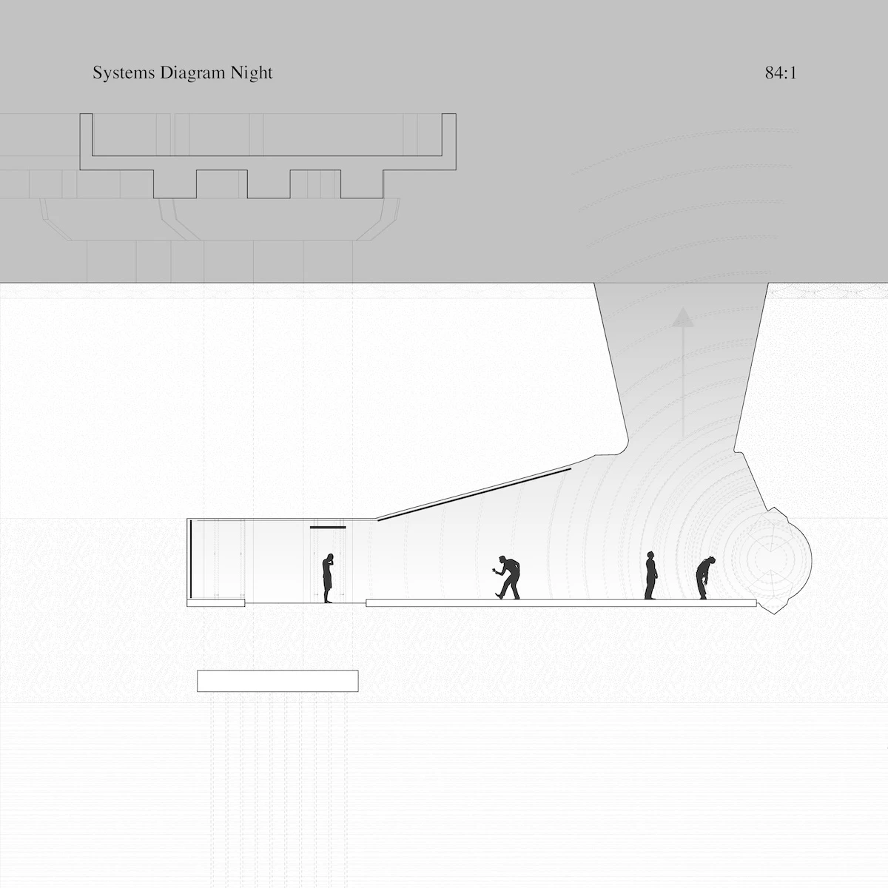
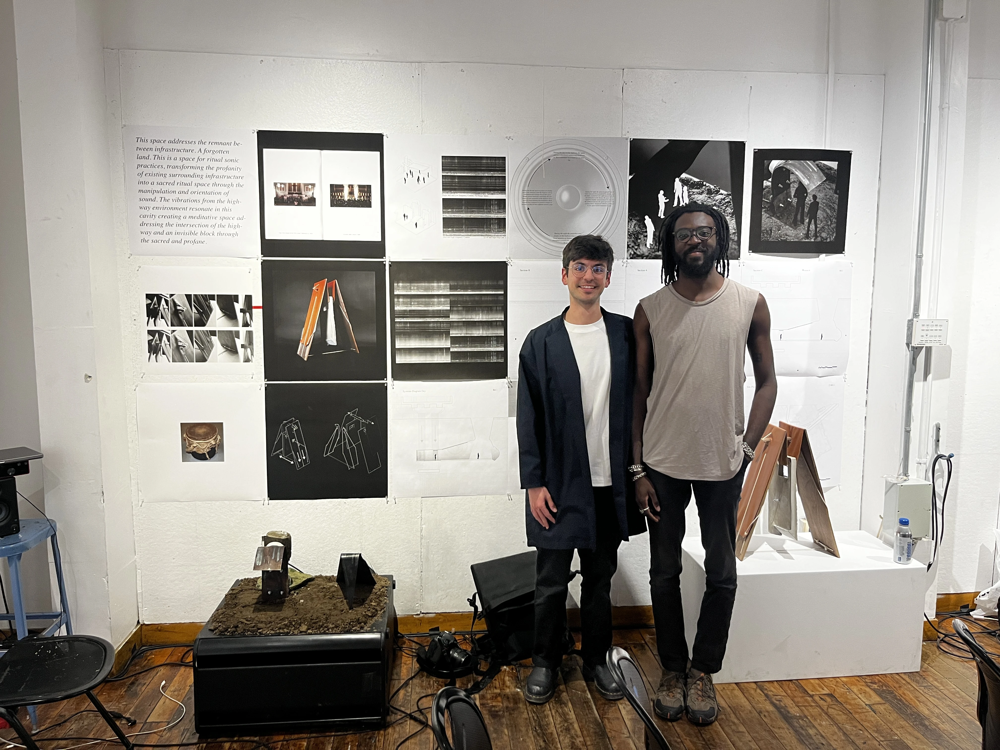

States of Exception | Architecture Advanced Studio Spring 2023

In this course, I explore the sacred and the profane in relation to sound culture and architecture. Within a predominant monoculture, the depictions of the sacred and the profane are weaponized to control and erase the imagery of counter-cultural movements, thereby further marginalizing their members. The sacred is elevated as an untouchable realm associated with established values, while the profane is cast as deviant and rebellious. Counter-cultural movements, seeking safety, work to unlearn narratives and reclaim symbolism to represent their journeys, create new spaces, and build community. Building on research on the idea of sacred and profane, this ritual object is a representation of indigenous drum circles and adjacent customs and ritual practices. The materiality is a direct symbolism of the body (wood) and skin (leather). The shape is a shrine, a spiritual/holy space, a form of archiving, a vessel, a body, a temple. The preservation and acknowledgment of concrete is a symbol of the dichotomies between ritual practice and modern-day sound system/club culture, with particular homage to warehouse raves and the use and abstraction of existing concrete structures as ritual, as collective dance is a ritual practice. Communities hold themselves together with simple bindings/shared experience; material properties of leather—they are malleable, natural, and ever-changing shapes.
Building on research on the idea of sacred and profane, this ritual object is a representation of indigenous drum circles and adjacent customs and ritual practices. The materiality is a direct symbolism of the body (wood) and skin (leather). The shape is a shrine, a spiritual/holy space, a form of archiving, a vessel, a body, a temple. The preservation and acknowledgment of concrete is a symbol of the dichotomies between ritual practice and modern-day sound system/club culture, with particular homage to warehouse raves and the use and abstraction of existing concrete structures as ritual, as collective dance is a ritual practice. Communities hold themselves together with simple bindings/shared experience; material properties of leather—they are malleable, natural, and ever-changing shapes.


This space addresses the remnant between the circadian—a threshold condition that hosts ritual sonic practices. It transforms the perceived profanity of surrounding highway infrastructure into a sacred environment through the manipulation and orientation of sound. Vibrations from the highway resonate within the excavated cavity, producing a meditative field that engages the intersection of infrastructure and an otherwise invisible spatial void through the lens of the sacred and the profane.
In Act 1, Jay and I explored these themes through the symbolic and ritual intersections of club culture, church, and religion. In Act 2, my focus shifted toward ritual practices grounded in sound and meditation, particularly the Lenape water drum and the spatial logic of meditation circles as frameworks for collective gathering through the body and sound. The closed loop—both symbolic and structural—became a central concept informing the artifact.

The artifact explores skin, body, and preservation through material studies using leather, wood, and concrete. Leather operates as a metaphor for skin—malleable, organic, and responsive—while wood suggests the body as structure. Concrete, in contrast, is treated as a preserved condition: a material index of modernity, infrastructure, and the built residue of underground culture. Together, these materials embody the tension between sacred ritual and profane space, forming an object that preserves both meditation practices and the histories of countercultural sound.
Site selection emerged through sonic observation. A residual plot of grass enclosed by highway infrastructure became the chosen ground—an overlooked yet acoustically active space. Its perceived insignificance situates it within the profane, yet its persistence marks it as a site of latent potential. Through field recordings and sonographic analysis, vibration became a primary design driver. Distinct transmission behaviors were observed: high frequencies traveling through steel, mid-range resonance through concrete, and low frequencies through soil.
These findings informed a series of material and spatial experiments. Small-scale models were constructed in which recorded vibrations were reintroduced through corresponding materials, testing how sound could be oriented and transformed. Excavation became a key gesture—submerging the site into the ground to heighten its acoustic sensitivity. Existing highway columns penetrate the space, acting as conduits that transmit vibration inward, while a large aperture projects sound outward. This establishes a cyclical condition: listening and performance, reception and transmission, meditation and amplification.
Material differentiation organizes the program. Each surface and volume is tuned to emphasize particular frequency ranges, with the central chamber translating a full-spectrum resonance of the highway. During the day, the space operates as a site for meditation. Passing vehicles unknowingly contribute to a continuous sonic ritual, their vibrations reframed as ambient composition. The space becomes a threshold—an interface between unconscious participation and intentional listening.
At night, the site shifts toward active use. Integrated, soffit-mounted speakers extend the acoustic logic of the space, enabling human-produced sound to be amplified and projected upward into the surrounding environment. The underground becomes a source, and the overground becomes the listening field. Passersby, now positioned as audience, are drawn into the ritual through directional sound projection.
The interplay between above and below ground conditions establishes a dynamic relationship between sacred and profane. Over time, the space is designed to evolve. Natural material degradation and continuous vibration will alter its acoustic properties, ensuring that no two experiences are identical. Each encounter becomes contingent, temporal, and personal. The space resists preservation in a conventional sense—it is not to be repaired. Instead, it is allowed to shift, decay, and eventually dissolve back into the conditions from which it emerged, completing its cycle as both sacred construct and profane residue.




